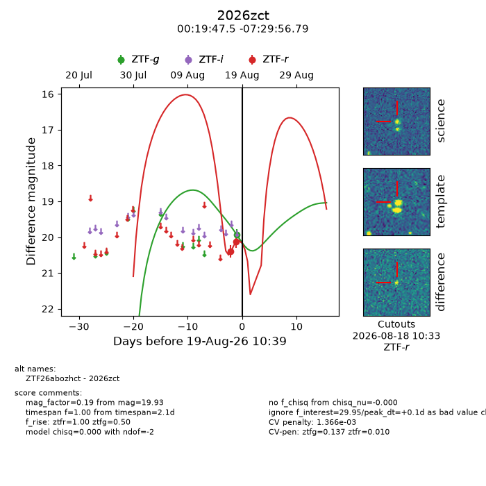
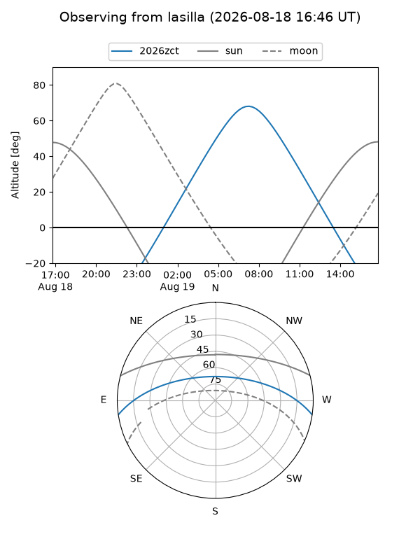
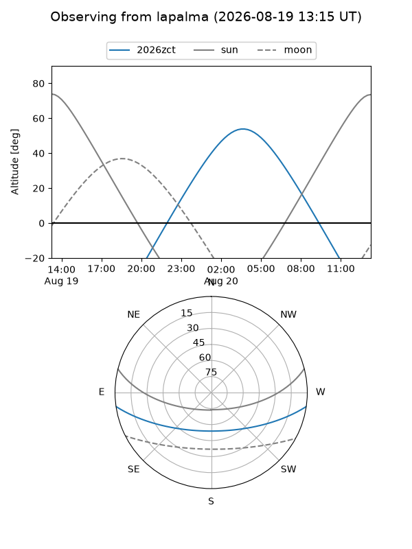
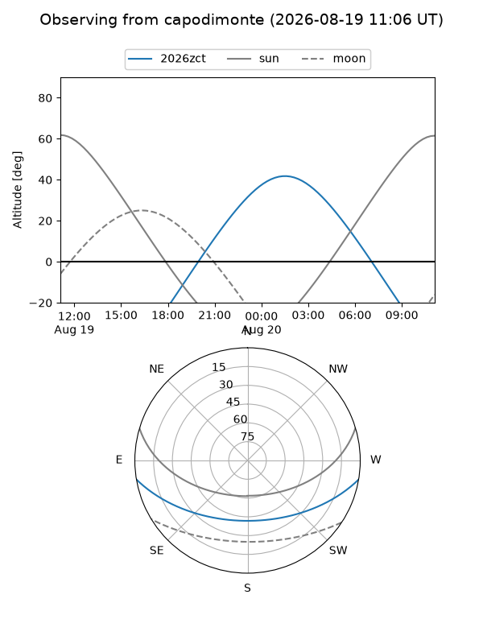
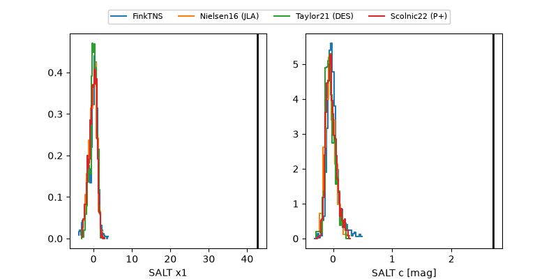

2026zct
Target 2026zct at 2026-08-19 10:42
Aliases and brokers:
FINK-ZTF: ztf.fink-portal.org/ZTF26abozhct
Lasair-ZTF: lasair-ztf.lsst.ac.uk/objects/ZTF26abozhct
ALeRCE-ZTF: alerce.online/object/ZTF26abozhct
YSE-PZ: ziggy.ucolick.org/yse/transient_detail/2026zct
TNS name: wis-tns.org/object/2026zct
Direct TNS query: direct search
alt names
ZTF26abozhct (ztf,fink_ztf)
2026zct (tns,yse)
Coordinates:
equatorial (ra, dec) = 4.9481,-7.49911
equatorial (HMS+DMS) = 00:19:47.55,-07:29:56.79
galactic (l, b) = (100.5649,-68.98529)
Flags:
TNS type: nan
peak dt: +0.1
likely cv: !!
Photometry:
last ztfg=19.93, ztfr=20.12
1 ztfg, 2 ztfr detections
Lightcurve

Visibility



Additional plots
